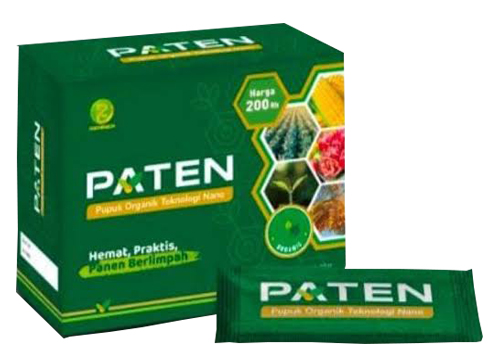
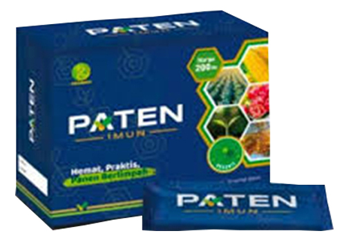
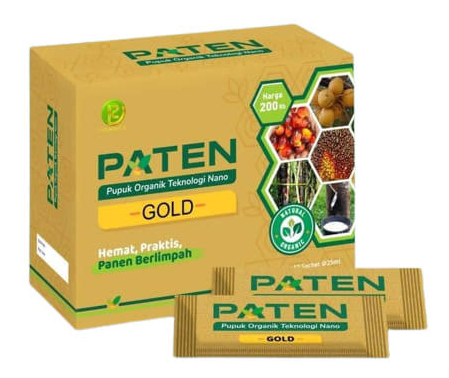

Pupuk Paten

Meningkatkan Hasil & Kualitas Produksi
Memperkuat Daya Tahan Tanaman Terhadap Cuaca Ekstrim
Merangsang Pembuahan di Luar Musim
Meringankan Biaya Produksi
Memperbaiki Kualitas Tanah
Menjadikan Imunitas Tanaman Lebih Kuat
Mempercepat Masa Panen
* Disclaimer: Hasil bisa berbeda-beda tergantung, lokasi, kondisi tanah, cuaca, benih, dan faktor lainnya.
Paten Imun

Meningkatkan imunitas/daya tahan tanaman terhadap hama dan penyakit (bakteri, virus, dan jamur);
Meningkatkan kinerja Pupuk Paten 10 kali lipat.
Merangsang Pembuahan di Luar Musim
Menghemat fungisida sampai 100%
Menghemat pestisida sampai 80%
Menghemat pupuk kimia sampai 80 – 100%
* Disclaimer: Hasil bisa berbeda-beda tergantung, lokasi, kondisi tanah, cuaca, benih, dan faktor lainnya.
Paten Gold

Paten Gold diformulasikan khusus untuk tanaman keras/tanaman tahunan seperti kelapa sawit, karet, durian, dll.
Menghemat penggunaan pupuk an organik (pupuk kimia) hingga 80-100%
Meningkatkan produksi bunga, buah dan hasil panen melimpah.
Mencegah gugur bunga dan buah
Merangsang pembungaan dan pembuahan di luar musim.
* Disclaimer: Hasil bisa berbeda-beda tergantung, lokasi, kondisi tanah, cuaca, benih, dan faktor lainnya.